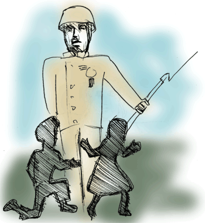

When the War Came Home
by Jan Iwaszkiewicz
WWII
Jen’s brother, back from Palestine,
quick marched himself into our lives
and what a holy show it was.
He spanned our hearth from hob to hob
an ancient statue brought to life
in gleaming bronze. A smiling, lithe
Colossus with a cup of tea
and buttered bread. As Stentor, he
would call the cattle in. “C’maawn!
C’ma-a-a-a-wn!” The echoes just fair tore
us both apart. Our mouths agape,
we’d always be there, in the way.
and if we fell, then he’d bend down
and pick us up and spin us round.
It made us feel as though we were
full grown and hanging on his words,
we fell in love. He’d speak to us
of what he’d seen and what he’d done
but he was quiet when the mob
came round all hungry for a spot
of tea and news. We felt so proud
that it was only us he found
worth talking to.
……………………….The river was
our secret place. We’d picnic on
the bend and swim, but only when
no-one was near. One day we let
him come with us but told him flat
he mustn’t look. He turned his back
and laughed. He said he’d thought we’d be
much more grown up than that. Slowly
we both undressed and nothing was
the same again.
.. …………………Then he was gone.
The Military Police had stopped
outside the pub. They pulled him out
handcuffed and bleeding from the mouth.
He fell and we could smell his fear,
but worse, he sobbed. One yelled out “Ere’s
a gutless bastard ‘oo ‘uz ran
and left his mates behind!”. They dragged
him up and tossed him in the van
We hunkered down behind our Dad.
Mum stared at us and hauled us home.
We pray real hard we’re not… you know.

 |
|